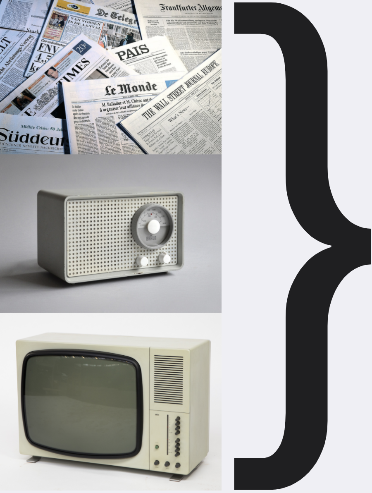

Notes on Modular News
What is this even needed for?

Strictly separated information carriers
Content types technology/device specific
Newspaper, amagzine: text, image
Radio: audio
Television: video (audio)
Monolithic and/or linear content
Story centric
not interoperational
not interactive
not personalized
"One size fits all."
1:1 transfer of iconography and the inherent paradigms to digital content:
Only the device had changed, not the structure of the content itself.
[Paper, Radio and Tv → Desktop Computer].
Doesn't scale anymore.
News content / publication is a
push request
.
Drastically changed landscape
The quantity of information exploded
[vs. unchanged quantity of human attention]
Different needs of media consumption
Use-case related [situation, device, ...]
Targetgroup related [age, educational level, ...]
Large variety of different platforms and devices
[highly fragmenting the ways news are consumed]
Some implications
Separate editing from writing
Structure driven
Content is directly accessible to computation on meta-level
Hyper-personalized
Use-case dependent re-assembled
Highly interoperational
Content artefacts become permanent & cumulative
No distinction between news and archive
Content artefacts become subject to collective refinement over time
Structuring ≠ simple tagging
Metajournalism: Create stories in the data of the stories
In order to curate stories that scale, adopt and connect across platforms and use-cases.
News content / publication is a
pull request
.